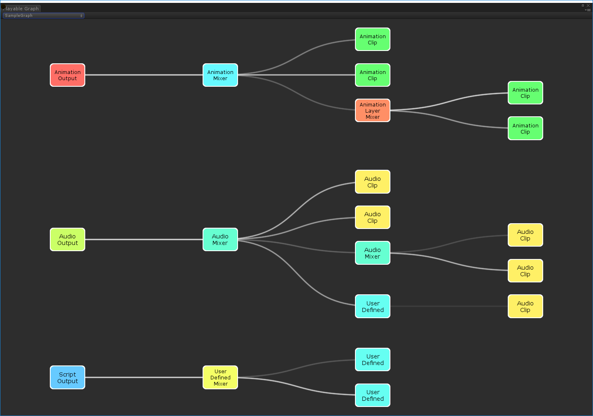
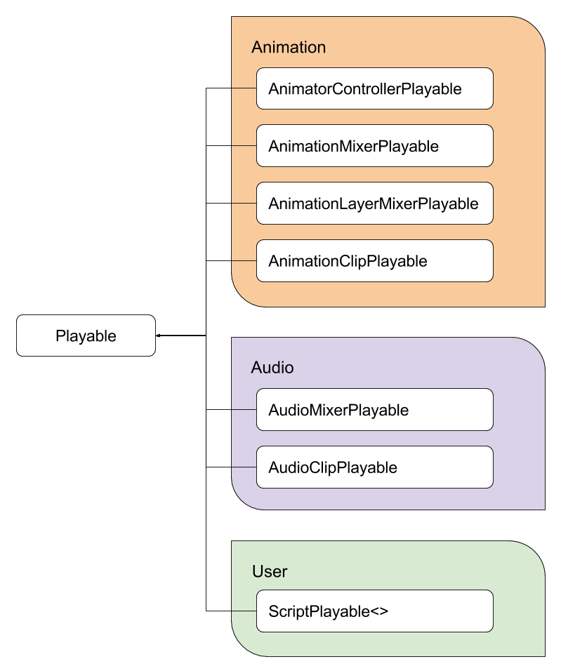
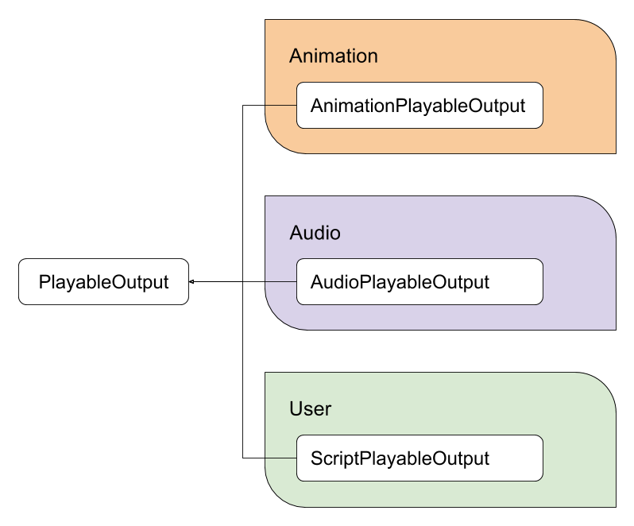

Use a PlayableGraph to mix, blend, and modify multiple data sources. You can then play the result through a PlayableOutput. Each Playable in a PlayableGraph can support animation, audio, or scriptsA piece of code that allows you to create your own Components, trigger game events, modify Component properties over time and respond to user input in any way you like. More info
See in Glossary.
The main parts of a PlayableGraph are as follows:
The PlayableGraph provides a flexible graph with time-based synchronization of multiple data sources. The Unity Engine implements data sources for animation and audio. Use scripting to create custom data sources.
In comparison, the Mecanim animation system includes a state machineThe set of states in an Animator Controller that a character or animated GameObject can be in, along with a set of transitions between those states and a variable to remember the current state. The states available will depend on the type of gameplay, but typical states include things like idling, walking, running and jumping. More info
See in Glossary graph that you can use to create transitions between animation states. The state machine graph only supports animation.
The PlayableGraph defines a set of playable outputs bound to a GameObjectThe fundamental object in Unity scenes, which can represent characters, props, scenery, cameras, waypoints, and more. A GameObject’s functionality is defined by the Components attached to it. More info
See in Glossary or a component. The PlayableGraph also defines playablesAn API that provides a way to create tools, effects or other gameplay mechanisms by organizing and evaluating data sources in a tree-like structure known as the PlayableGraph. More info
See in Glossary and their relationships with each other.

The PlayableGraph manages the lifecycle of its playables and their outputs. The following lists a few of the most commonly used PlayableGraph methods:
PlayableGraph.Create() static method.PlayableGraph.Play() method.PlayableGraph.Stop() method.PlayableGraph.Evaluate() method.PlayableGraph.Connect() method.PlayableGraph.Destroy() method. This method automatically destroys all playables and playable outputs created by the PlayableGraph. If you don’t destroy a PlayableGraph, Unity issues an error message.For a full list of PlayableGraph methods and for more details, refer to the PlayableGraph struct in the Scripting Reference.
A playable is a C# struct that implements the IPlayable interface. A playable is a node that connects to other playables and defines its relationship with other playables.

Unity implements core playable types as C# structs to avoid allocating memory for garbage collection. The Playable class defines a few basic methods and is the base type for all playables. The PlayableExtensions static class provides most of the methods for interacting with playables.
Because Playable is the base type for all playables, you can implicitly cast a playable to it. However, the opposite isn’t true. If you explicitly cast a Playable onto an incompatible type, it throws an exception.
The types that inherit from the Playable base type have additional, type specific methods. For example, the AnimationClipPlayable type includes specific methods for an animation clipAnimation data that can be used for animated characters or simple animations. It is a simple “unit” piece of motion, such as (one specific instance of) “Idle”, “Walk” or “Run”. More info
See in Glossary encapsulated in a playable. To access type specific methods, you must cast your playable to the appropriate type.
Non-abstract playables have the Create() public static method which creates a playable of the corresponding type. The Create() method always takes a PlayableGraph as its first parameter, and that graph owns the new playable. Some playable types might require additional parameters.
A playable output is a C# struct that implements an IPlayableOutput. It defines the output of a PlayableGraph.

Unity implements playable output types as C# structs to avoid allocating memory for garbage collection.
The PlayableOutput class defines a few basic methods and is the base type for all playable outputs. The PlayableOutputExtensions static class provides most of the methods for interacting with playable outputs.
It’s recommended that you link a valid playable output to a playable. If a playable output isn’t linked to a playable, the playable output does nothing. To link a playable output to a playable, use the PlayableOutput.SetSourcePlayable() method. The linked playable acts as the root for that specific playable output.
Non-abstract playable outputs have a public static method, Create(), that creates a playable output of the corresponding type. The Create() method always takes a PlayableGraph as its first parameter, and that graph owns the new playable output. Some playable output types might require additional parameters.